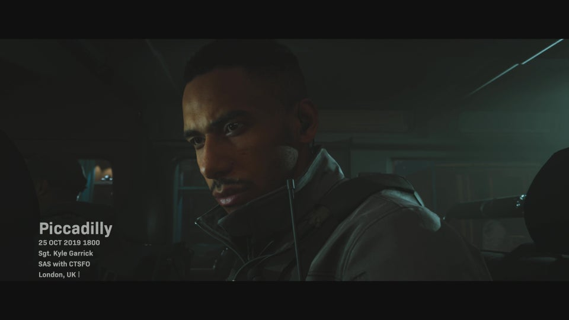
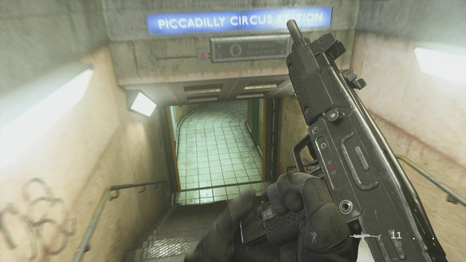
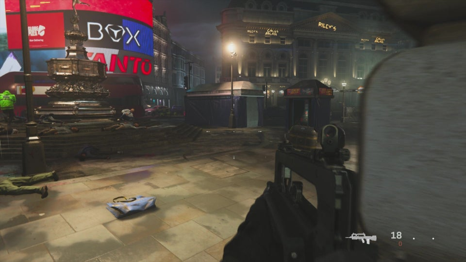
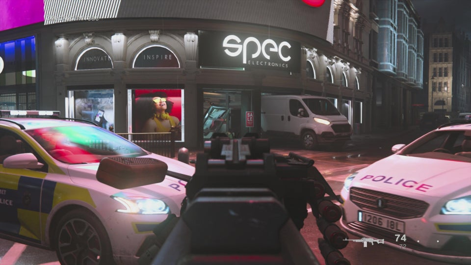

Piccadilly
This page contains IGN's walkthrough for Fog of War in Call of Duty: Modern Warfare.
In this mission, you'll be making your way through the streets of London to fend off a terrorist attack. Be careful not to shoot any of the civilians, as it will end the mission.
After the altercation in the street, continue along the path and make a left, in the direction of the red phone booth. Slowly make your way forward from here. Head to the Piccadilly Circus Station, which is on the left, down some stairs.
At the bottom of the stairs, you'll find multiple terrorists with a group of hostages. Neutralize them and carry on, up the steps. At the top of the steps, you'll come to an open area with a fountain nearby.
Carefully, make your way to the right, towards the fountain, but make sure you use cover. Don't just run towards it, because you'll likely get shot.
If you continue to the right of the fountain, you'll come across a few more enemies, one of which is a suicide bomber. Put some distance between the two of you and take him out.
Head towards the tent that has a sign that says "Circus Arcade" and watch out for any enemies coming from the Tanto building.
You'll then be instructed to make your way to the Tanto building, but don't just go rushing in. Instead, aim down your sights and slowly approach the front door. Another suicide bomber will run out, so make sure you take him out and immediately back away from the cars.
Once it's clear, you can go inside. Move the debris and a short cinematic will play, introducing you to a familiar face. Follow him up the stairs and you'll come to a hostage with a bomb strapped to him.
After the unfortunate ending, the mission will end and you'll be ready to move on to the third mission.
<- Fog of War Walkthrough Embedded ->